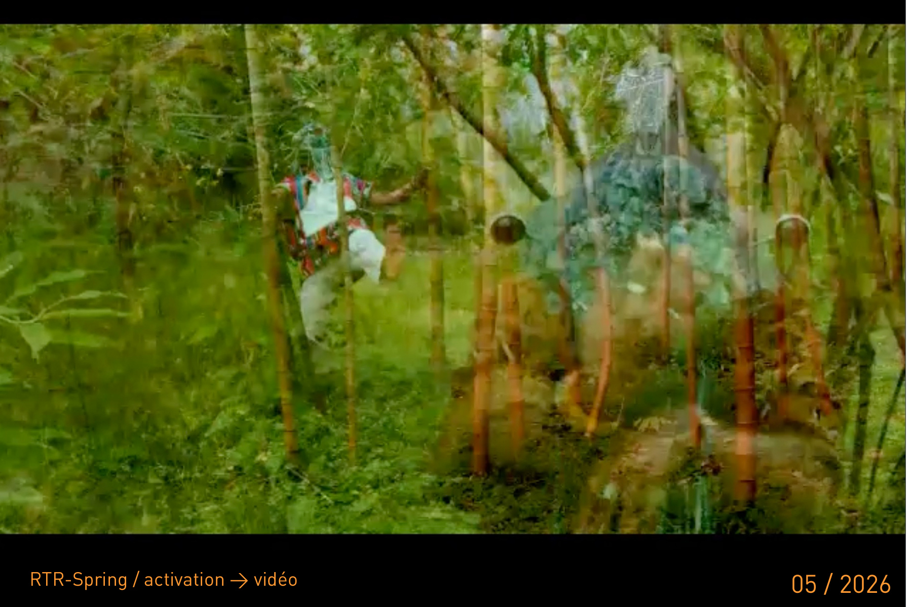

ARTS VISUELS
Sculptures, masques, parures et dispositifs de présence
Le travail d’Alexis Tolmatchev se déploie à travers des formes conçues comme des lieux de basculement. Sculptures, formes et installations cherchent le déplacement du regard, convoquent la matière et ouvrent un autre régime de présence.
VOIR LES PIÈCESÉCRITURE
Contes, fragments, textes d’atelier et romans en cours
L’écriture accompagne le travail plastique comme un autre lieu de la forme. Elle rassemble contes, récits, journal d’atelier et recherches en cours, dans une langue de veille, de mémoire et de traversée.
LIRE